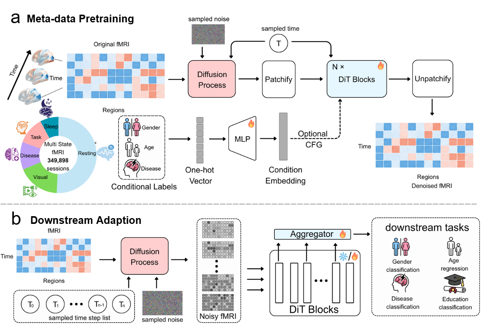
Brain-DiT: A Universal Multi-state fMRI Foundation Model with Metadata-Conditioned Pretraining
MICCAI, 2026.
TOP 2% of MICCAI 2026 submissions; shortlisted for the Best Paper Award and Young Scientist Award.
I am Junfeng Xia (夏俊锋), a 2nd-year master's student in Biomedical Engineering at Southern University of Science and Technology, advised by Prof. Quanying Liu (刘泉影). I expect to graduate in June 2027 and am applying for Fall 2027 Ph.D. programs. Before joining SUSTech, I received my B.Eng. in Computer Science and Technology from Zhengzhou University, where I was advised by Prof. Qidong Liu (刘起东).
I am especially interested in three questions:
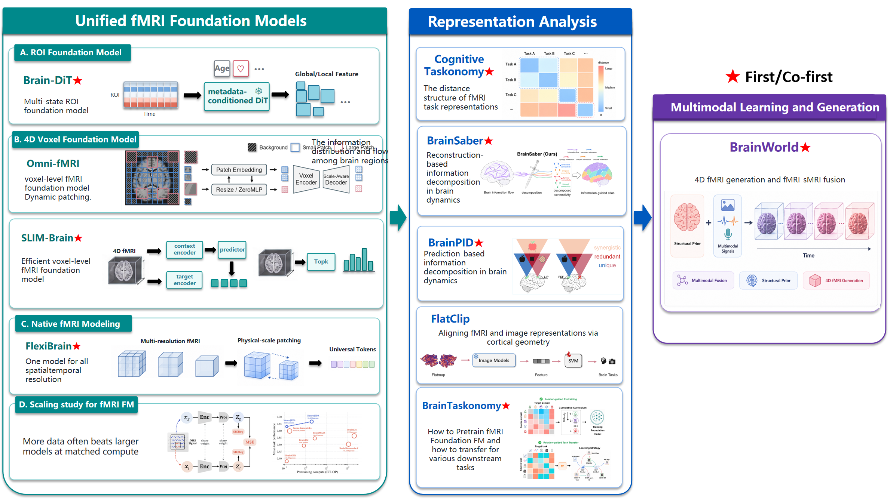
* denotes equal contribution.

Brain-DiT: A Universal Multi-state fMRI Foundation Model with Metadata-Conditioned Pretraining
MICCAI, 2026.
TOP 2% of MICCAI 2026 submissions; shortlisted for the Best Paper Award and Young Scientist Award.
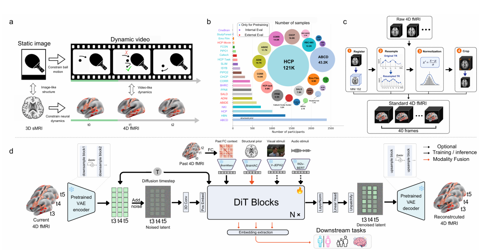
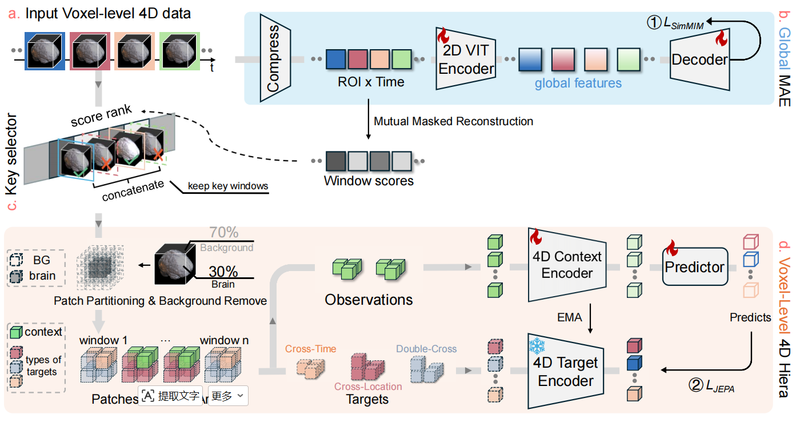
SLIM-Brain: A Data- and Training-Efficient Foundation Model for fMRI Data Analysis
arXiv:2512.21881, 2025.
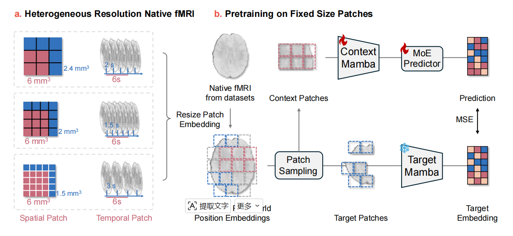
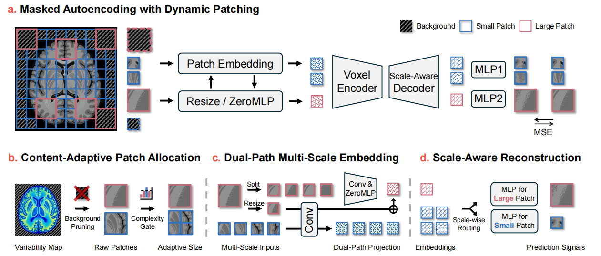
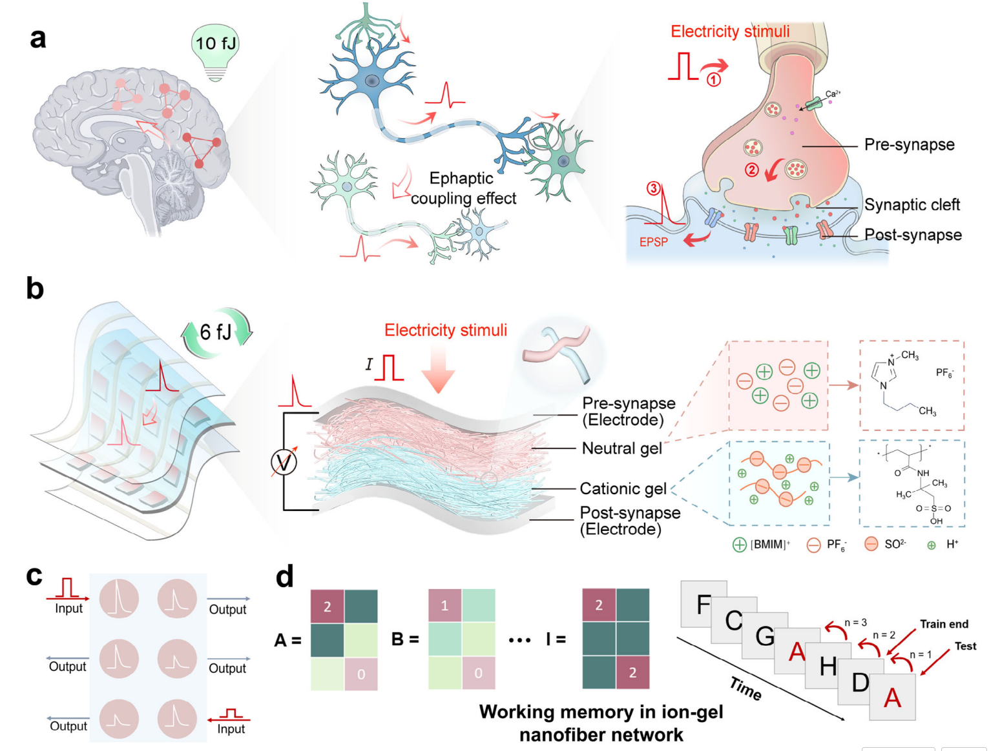
Advanced Materials, 37(16), 2419013, 2025.
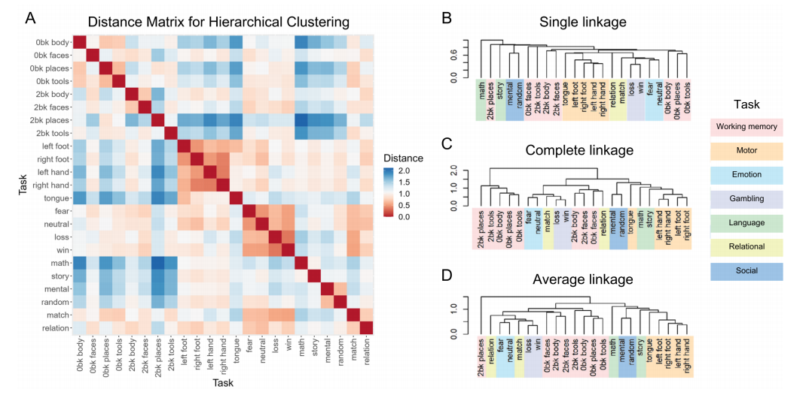
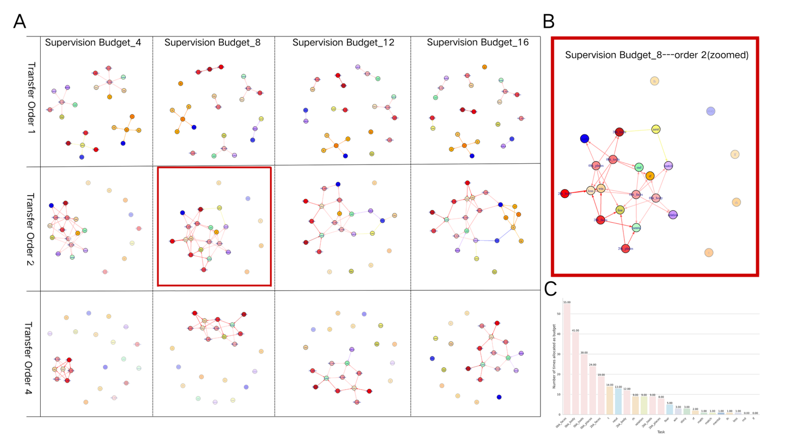
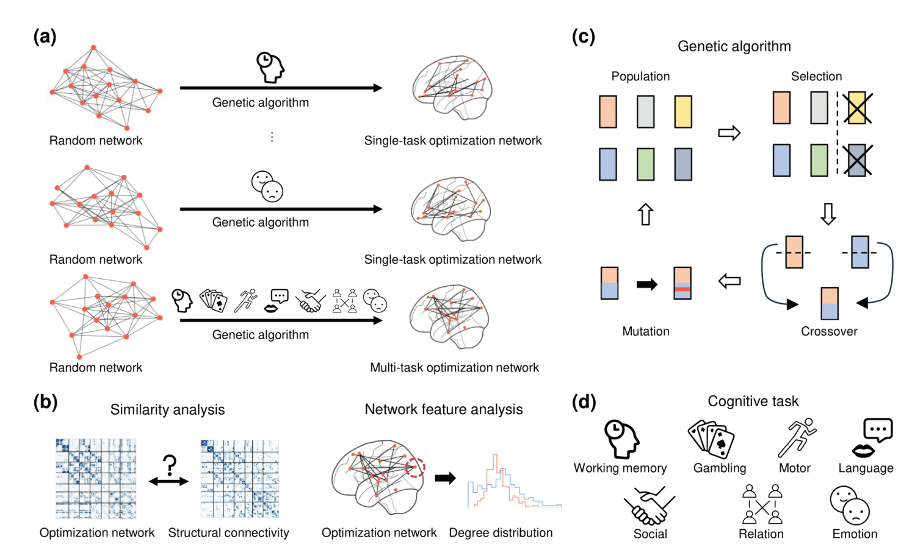
A Genetic Algorithms for Optimizing Structural Brain Network Across Cognitive Tasks
China Automation Congress, 5210-5215, 2024.
* denotes equal contribution.
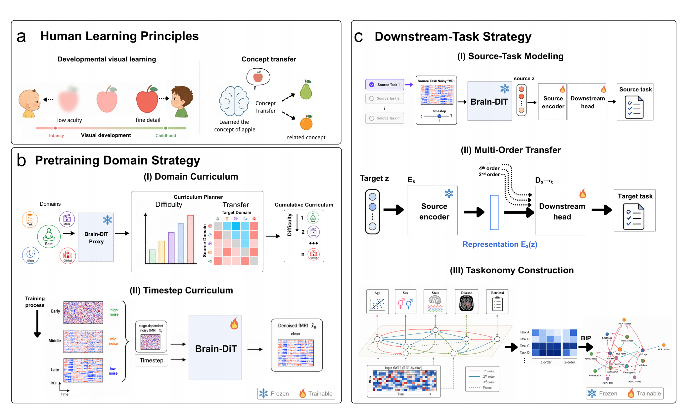
BrainTaskonomy: Learning How to Pretrain and What to Transfer in fMRI Foundation Models
Under review.
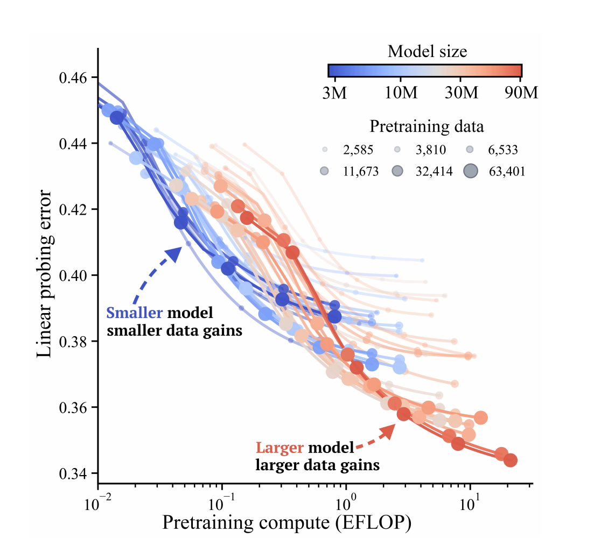
A Scaling Study for fMRI Foundation Models
Under review.
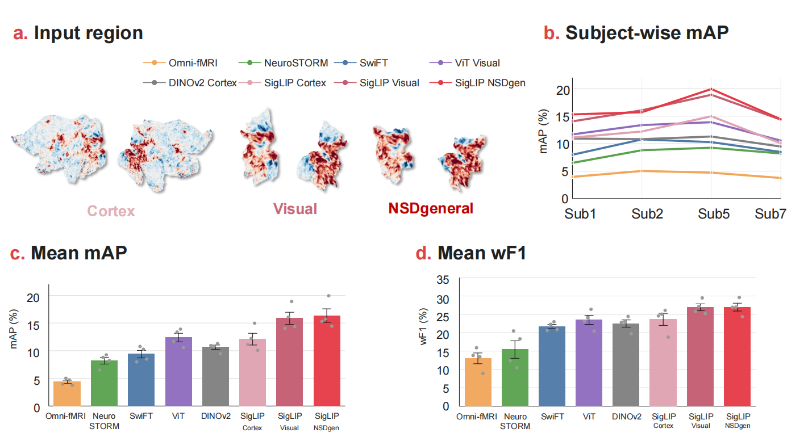
FlatClip: Reusing Image Foundation Models for fMRI Representation Learning via Cortical Flatmaps
Under review.
Uncovering information hubs in human brain dynamics through prediction-based decomposition
Manuscript in preparation.